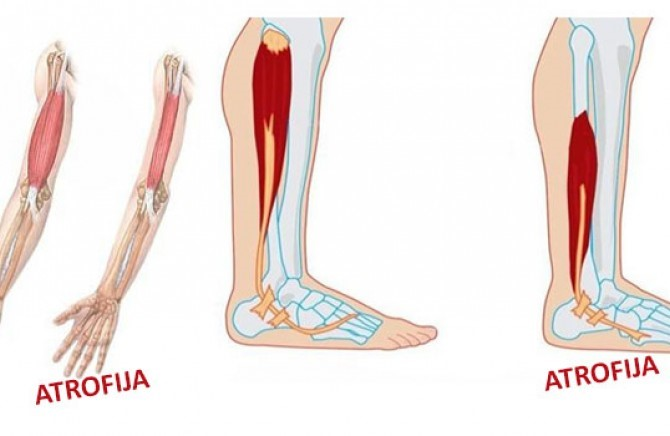

Ovo je bolest u kojoj slabe i propadaju skeletni mišići. Karakterističan znak distrofije mišića je progresivna slabost mišića koja se širi u određenoj grupi mišića. Postoji više različitih oblika distrofije, a razlikuju se po tome koji su mišići zahvaćeni bolešću. Distrofije se javljaju zbog genetskih poremećaja, tj. zbog nedovoljne proizvodnje određenih proteina. Zbog nedostatka proteina dolazi do poremećaja u mišićnim vlaknima; mišićno tkivo propada i biva zamijenjeno vezivnim i masnim tkivima. Najpoznatiji oblik je Dušeneova distrofija kod djece, koja je uzrokovana poremećajima gena na X hromozomu.
Mišićna atrofija može da bude iznurujuća bolest zbog koje bolesnik trpi neprekidne bolove i stalno je umoran. I najmanji pokret može da izazove bol i neugodnost kod bolesnika od koje on postaje iscrpljen i frustriran. Pod pojmom mišićne atrofije podrazumeva se propadanje i gubitak mišićne mase obično kao posledica nekretanja i slabog zdravlja. Alternativni nazivi su gubitak mišićne mase, propadanje ili atrofija mišića. Čak i najmanja mišićna atrofija obično dovodi do gubitka pokretljivosti ili snage. Može biti primarna (miogena) koja je prouzrokovana oboljenjem mišićnog vlakna, neurogena koja je posledica oštećenja živca ili atrofija usled imobilizacije kod lečenja preloma.
Snažna (iznenadna) mišićna kontrakcija ili udarac u mišić - dovode do prekida mišićnih vlakana ili njihovih omotača, dolazi do krvarenja, stvara se krvni izliv (hematom) u mišiću. Povreda mišića i nastanak hematoma - smanjuju sposobnost kontrakcije i snagu mišića.
Povrede mišića nastaju iznenada i sportista tačno oseća mesto povrede. Glavni znak povrede mišića je bol kao ubod noža. Sportista navodi slabost povređenog dela, pokretljivost je ograničena i bolna, a u nekim slučajevima i nemoguća. Istegnuće je posledica istezanja mišića preko granice elastičnosti mišićnih struktura. Istegnuće mišića predstavlja oštećenje (pucanje) do 5% mišićnih vlakana. Ovo je blago oštećenje koje zahteva 7-14 dana mirovanja. Sva istegnuća mišića neophodno je adekvatno lečiti i ispoštovati period mirovanja, jer se često minimalna povreda mišića može iskomplikovati u tešku povredu, koja zahteva dugotrajno lečenje.